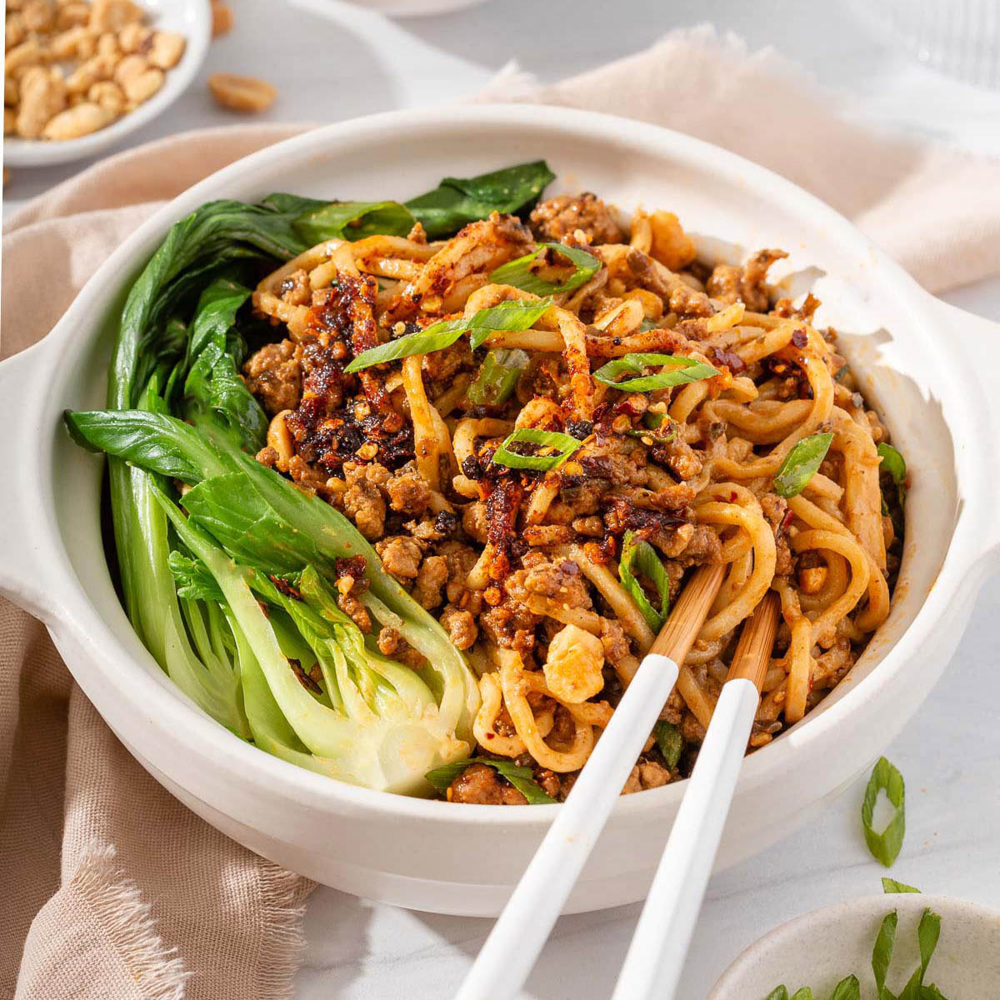

Home Page
Dan Dan Noodles

Description
Dan Dan Noodles is a classic Chinese noodle dish from the Sichuan province prepared with a spicy sauce.
The sauce is usually made with chili oil, Sichuan peppers and other flavorful ingredients. It usually
includes pork or mince beef and preserved vegetables and was traditionally served in a small bowl as more of an
appetizer or as a soup.
The name refers to the poles (dan dan) used by street vendors to carry their wares over their shoulders,
selling noodles to hungry citizens. Recipes vary widely from region to region and cook to cook and are often
influenced by personal and regional taste.
Ingredients
- Mince Beef
- Egg Noodles
- Garlic
- Ginger
- Shallot
- Spring Onions
- Sesame Seeds
- Oil
- Honey
- Peanut Butter
- Rice Wine Vinegar
- Siriacha
- Soy Sauce
- Sweet Chilli Sauce
- Chilli Flakes
Steps
- Start by cooking 3 nests of egg noodles in a boiling pot of water.
- Fine chop 1 shallot, 1 clove of garlic and 10g of ginger. Add ½ tbsp of oil to a medium heat pan, leave for 2 minutes
before adding your shallot to the pan. Let this cook for 2 minutes before adding the garlic and ginger. After another two
minutes, add 250g of mince to your pan, mix in till brown.
- While your mince is browning, in a bowl, add 2 tbsp of siriacha, tbsp of sweet chilli sauce. tbsp honey, tbsp soy sauce and
a tbsp of rice wine vinegar. Mix together and add to your pan once your mince is brown. Stir to the pan to add the sauce to your
mince.
- In a large bowl, add 2tsp of chilli flakes, 1 tsp of crushed sichuan peppercorn, 2 tbsp of sesame seeds, 2 cloves of finely
chopped garlic, 2 tbsp of warm oil, 4 tbsp of soy sauce, 2 tbsp of rice wine vinegar, 2 tbsp peanut butter, 1 tbsp of honey and a
cup of water from the egg noodles.
- Once everything is cooked, start moving your egg noodles over to your large bowl, mixing the sauce while you add them. While you
add your noodles to the bowl, add your mince to the large bowl. You should use ¾ of your mince and save the last ¼ for
when you dish up
- Thinly slice 3 - 4 spring onions. When you are ready to serve, use a bowl and top with some mince left over, spring onions and
sesame seeds.